| Figure 51-17.
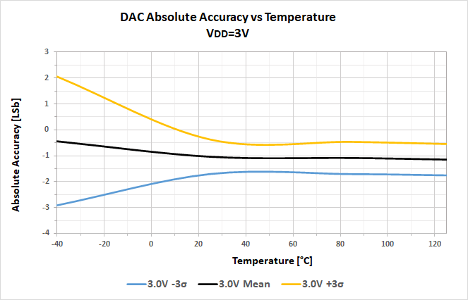
| Figure 51-18.
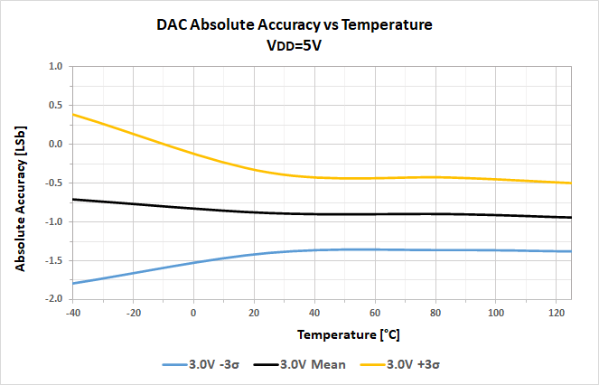
|
| Figure 51-19.
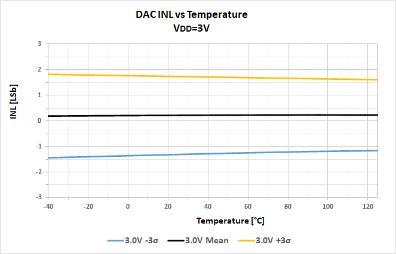
| Figure 51-20.
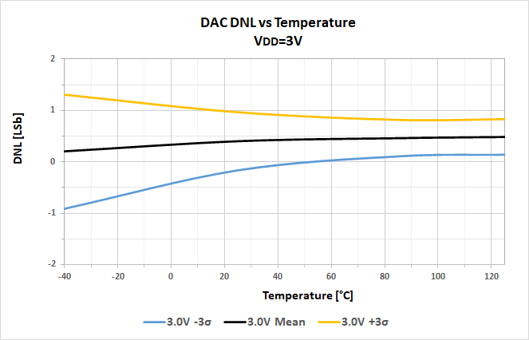
|
| Figure 51-21.
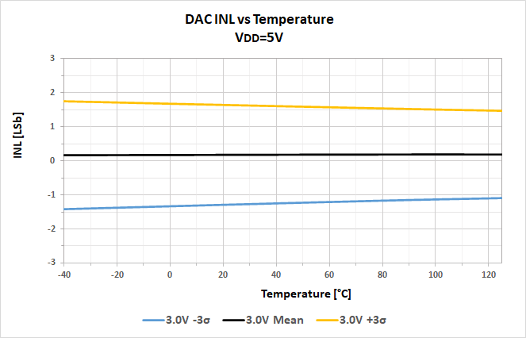
| Figure 51-22.
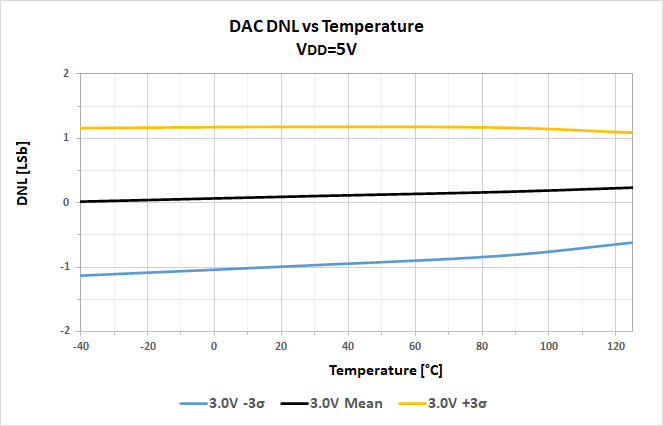
|
| Figure 51-23.
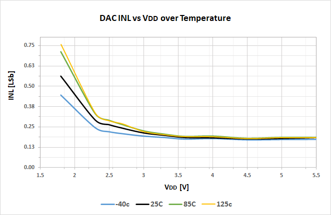
| Figure 51-24.
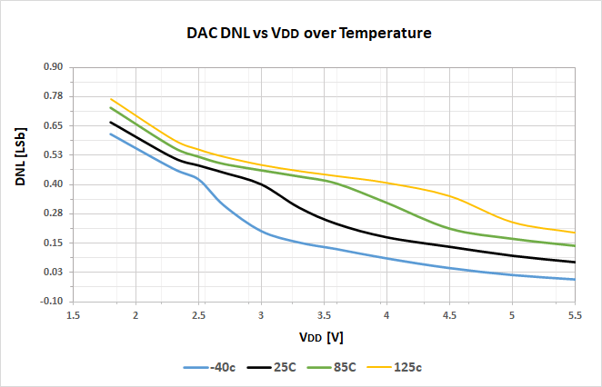
|
| Figure 51-25.
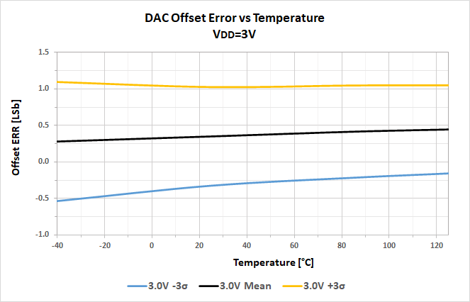
| Figure 51-26.
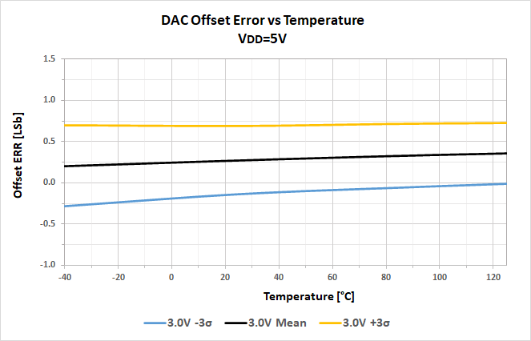
|
| Figure 51-27.
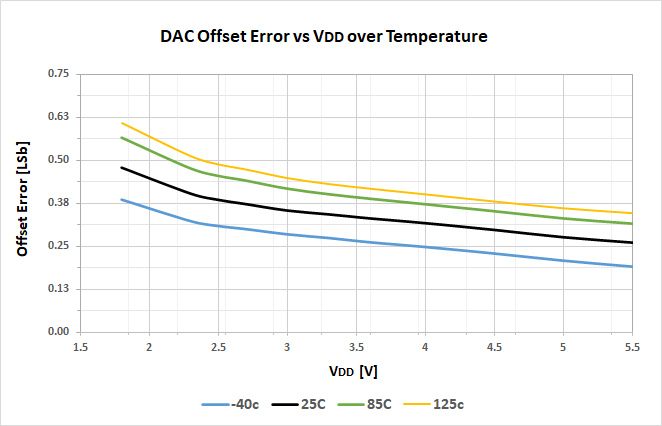
| Figure 51-28.
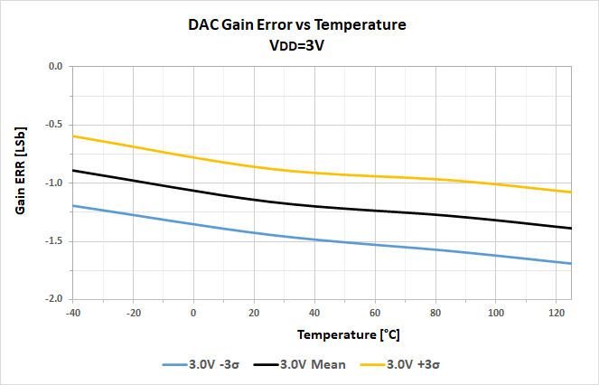
|
| Figure 51-29.
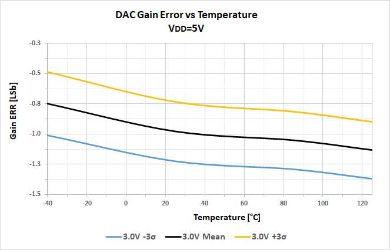
| Figure 51-30.
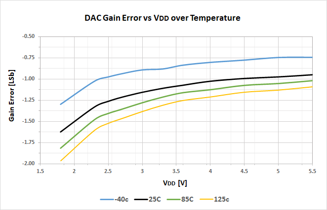
|